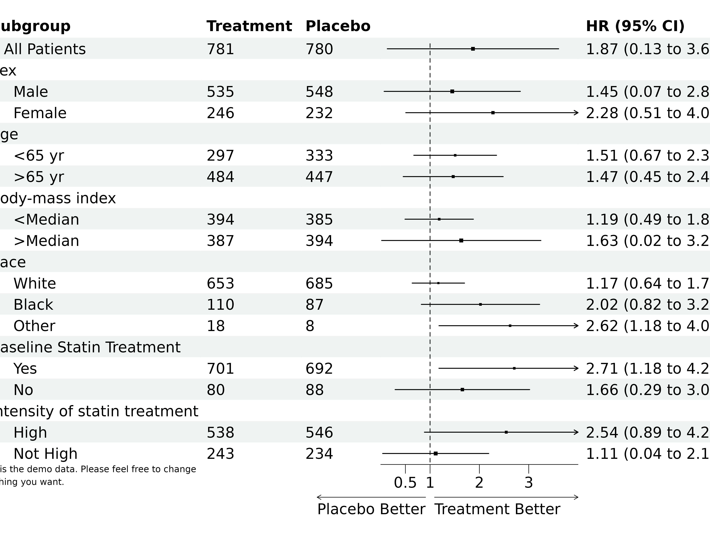
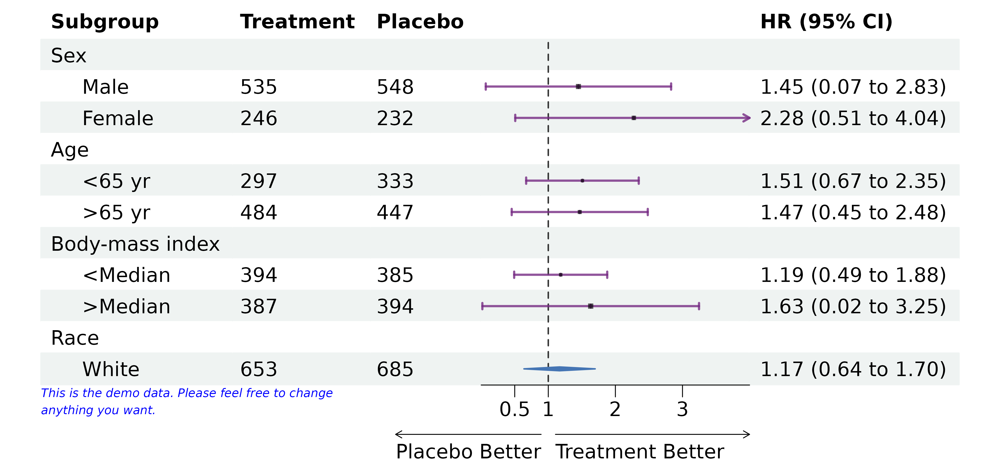
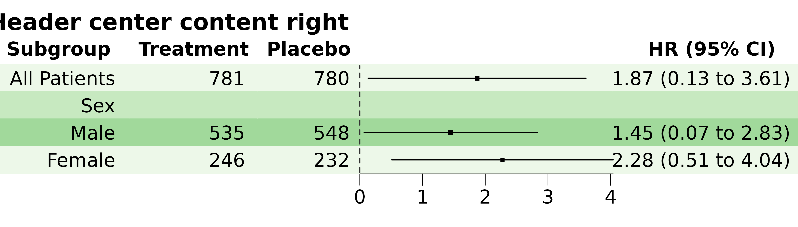
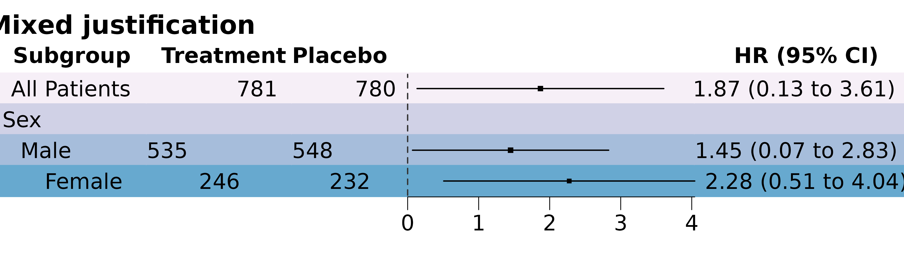
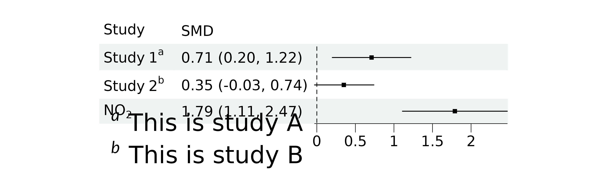
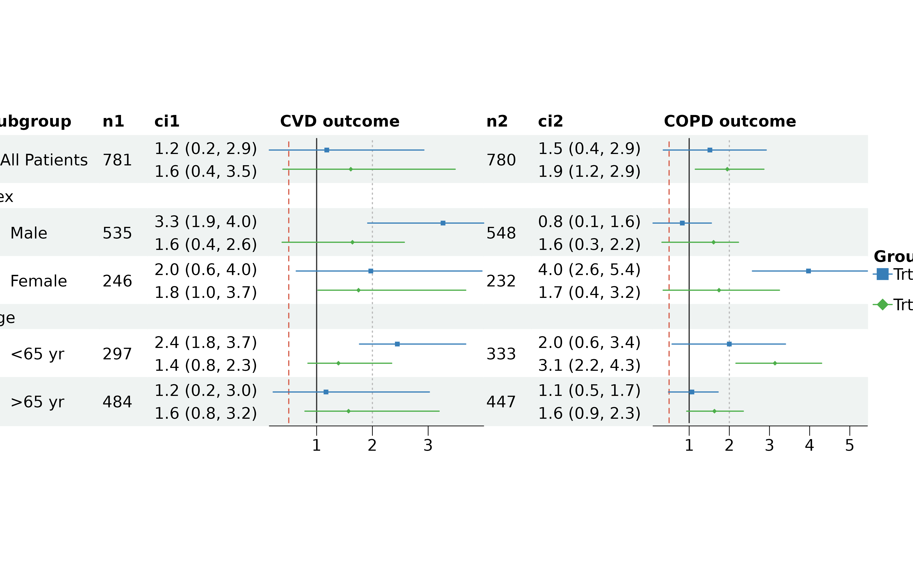
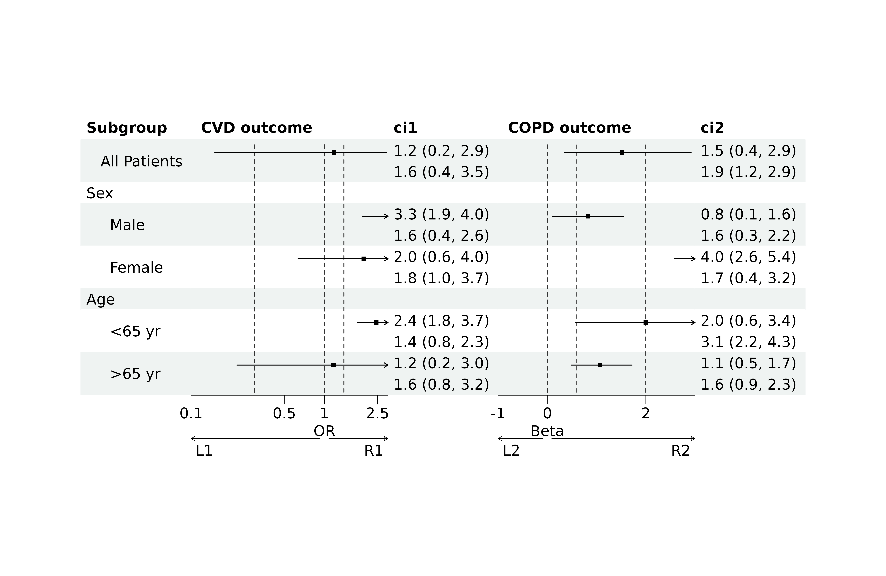
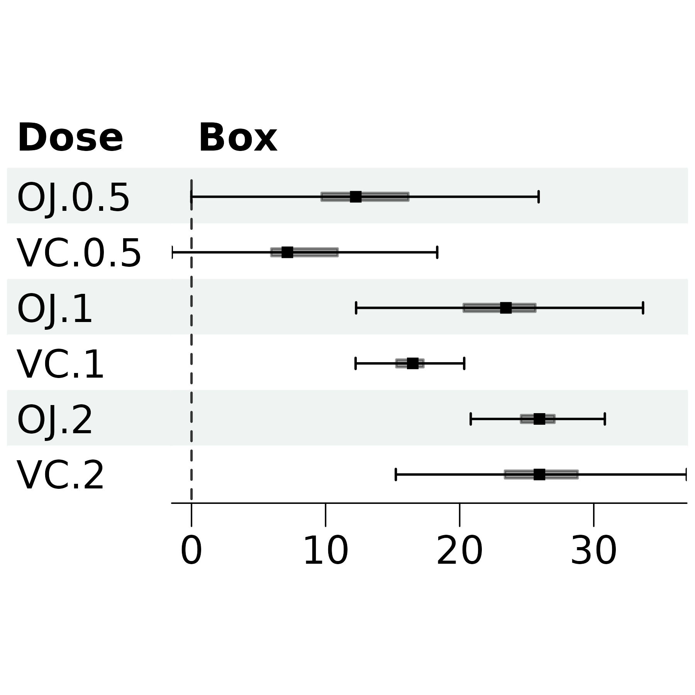

Introduction to forestploter
Alimu Dayimu
2026-09-29
Source:vignettes/forestploter-intro.Rmd
forestploter-intro.RmdIntroduction
The forestploter package provides a flexible way to draw
forest plots. The layout of the plot is determined by the dataset, and
all plot elements are placed in cells, making it easy to edit any
element by specifying its row and column. The graphical parameters of
each element can be further customized within its respective cell. This
vignette will demonstrate how to create a simple forest plot.
The plotting steps demonstrated in this vignette may not be optimal. Other R packages may be better suited for the plots shown here. Please choose the one that best suits your needs. The final plot is shown below:

Forest plots are commonly used in medical research publications, especially in meta-analysis. They can also be used to report the coefficients and confidence intervals (CIs) of regression models.
There are many packages available for drawing forest plots. The most popular one is forestplot. Other packages specialized for meta-analysis include meta, metafor, and rmeta. Some packages, like ggforestplot, use ggplot2 to draw forest plots, though ggforestplot is not yet available on CRAN.
The main differences between forestploter and other
packages are:
- Focuses specifically on forest plots.
- Treats the forest plot as a table, where elements are aligned in rows and columns. Users have full control over what and how to display the forest plot contents.
- Graphical parameters are controlled with a style.
- The plot is built step by step with the pipe
|>. - Allows post-hoc plot editing.
- Supports CIs in multiple columns and by groups.
Basic Forest Plot
The layout of the forest plot is determined by the dataset provided. Please refer to the other vignette for instructions on changing text or background, adding or inserting text, adding borders to cells, and editing the color of the CI in specific cells.
forest() draws the table and the confidence intervals.
The rest is added with functions that take the plot as their first
argument, so they can be chained with the pipe |>:
-
set_xaxis(): limits, tick marks and scale of the x-axis, and vertical lines. -
set_labs(): title, x-axis labels, footnote, arrow labels and legend labels. -
scale_sizes(): point sizes scaled by study weights. -
set_style(): graphical parameters, seeforest_style().
A few rules apply to them:
- The plot is built at each step and is always a
gtable, so the result of any step can be printed, saved withggplot2::ggsave()or combined with other plots, for example withpatchwork::wrap_elements(). - Arguments left out keep their current value, and
NULLremoves a label or goes back to the default. For example,set_labs(p, footnote = NULL)removes the footnote and keeps the title, andset_xaxis(p, xlim = NULL)goes back to the default limits. In settings with one value for each CI column,NAleaves that column at its default. - They build the plot again, so they must be used before the plot is
edited with the functions described in the other vignette, such as
edit_plot()andinsert_text(). - Warnings about point sizes are given when the plot is drawn, since
scale_sizes()may still follow in the pipe.
The arguments of forest() used before version 1.2.0,
such as xlim or footnote, and themes created
with forest_theme() still work and give the same plots. The
old arguments give a message pointing to set_xaxis() or
set_labs() the first time each of them is used in a
session, and ?forest_theme shows how the theme settings map
onto forest_style().
Simple Forest Plot
The first step is to prepare a data.frame that will
serve as the basic layout of the forest plot. The column names of the
data will be drawn as the header, and the content will be displayed in
the forest plot body. One or more blank columns should be provided to
draw the confidence intervals (CIs). The width of the CI is
determined by the width of its corresponding column. To provide more
space for the CI, increase the number of spaces in the blank
column.
First, we need to prepare the data for plotting.
library(grid)
library(forestploter)
# Read provided sample example data
dt <- read.csv(system.file("extdata", "example_data.csv", package = "forestploter"))
# Keep needed columns
dt <- dt[, 1:6]
# Indent the subgroup if there is a number in the placebo column
dt$Subgroup <- ifelse(is.na(dt$Placebo),
dt$Subgroup,
paste0(" ", dt$Subgroup))
# Replace NA with blank or NA will be transformed to character
dt$Treatment <- ifelse(is.na(dt$Treatment), "", dt$Treatment)
dt$Placebo <- ifelse(is.na(dt$Placebo), "", dt$Placebo)
dt$se <- (log(dt$hi) - log(dt$est)) / 1.96
# Add a blank column for the forest plot to display CI
# Adjust the column width with spaces; increase the number of spaces below
# to provide a larger area for drawing the CI
dt$` ` <- paste(rep(" ", 20), collapse = " ")
# Create a confidence interval column to display
dt$`HR (95% CI)` <- ifelse(is.na(dt$se), "",
sprintf("%.2f (%.2f to %.2f)",
dt$est, dt$low, dt$hi))
head(dt)
#> Subgroup Treatment Placebo est low hi se
#> 1 All Patients 781 780 1.869694 0.13245636 3.606932 0.3352463
#> 2 Sex NA NA NA NA
#> 3 Male 535 548 1.449472 0.06834426 2.830600 0.3414741
#> 4 Female 246 232 2.275120 0.50768005 4.042560 0.2932884
#> 5 Age NA NA NA NA
#> 6 <65 yr 297 333 1.509242 0.67029394 2.348190 0.2255292
#> HR (95% CI)
#> 1 1.87 (0.13 to 3.61)
#> 2
#> 3 1.45 (0.07 to 2.83)
#> 4 2.28 (0.51 to 4.04)
#> 5
#> 6 1.51 (0.67 to 2.35)The data prepared above will serve as the basic layout of the forest plot. The example below demonstrates how to draw a simple forest plot, with a footnote added for demonstration.
p <- forest(dt[, c(1:3, 8:9)],
est = dt$est,
lower = dt$low,
upper = dt$hi,
sizes = dt$se,
ci_column = 4,
ref_line = 1) |>
set_xaxis(xlim = c(0, 4), ticks_at = c(0.5, 1, 2, 3)) |>
set_labs(arrow = c("Placebo Better", "Treatment Better"),
footnote = "This is the demo data. Please feel free to change\nanything you want.")
# Print plot
plot(p)
Changing the Style
We will now use the same data as above but add a summary point.
Additionally, we will change the graphical parameters for the confidence
interval and other parts of the plot. The style of the forest plot is
set with the forest_style function, which takes a
gpar() for each part of the plot. Only the settings given
are changed, everything else keeps its default. A style can be passed to
the style argument of forest(), or applied
later with set_style(). Refer to the manual for more
details.
dt_tmp <- rbind(dt[-1, ], dt[1, ])
dt_tmp[nrow(dt_tmp), 1] <- "Overall"
dt_tmp <- dt_tmp[1:11, ]
# Define a style
st <- forest_style(base_size = 10,
# Confidence interval point shape, line type/color/width
ci_pch = 15,
ci = gpar(col = "#762a83", fill = "black", alpha = 0.8,
lty = 1, lwd = 1.5),
ci_t_height = 0.2, # Set a T end at the end of CI
# Reference line width/type/color
ref_line = gpar(lwd = 1, lty = "dashed", col = "grey20"),
# Vertical line width/type/color
vline = gpar(lwd = 1, lty = "dashed", col = "grey20"),
# Change summary color for filling and borders
summary = gpar(fill = "#4575b4", col = "#4575b4"),
# Footnote font size/face/color
footnote = gpar(cex = 0.6, fontface = "italic", col = "blue"))
pt <- forest(dt_tmp[, c(1:3, 8:9)],
est = dt_tmp$est,
lower = dt_tmp$low,
upper = dt_tmp$hi,
sizes = dt_tmp$se,
is_summary = c(rep(FALSE, nrow(dt_tmp) - 1), TRUE),
ci_column = 4,
ref_line = 1,
style = st) |>
set_xaxis(xlim = c(0, 4), ticks_at = c(0.5, 1, 2, 3)) |>
set_labs(arrow = c("Placebo Better", "Treatment Better"),
footnote = "This is the demo data. Please feel free to change\nanything you want.")
# Print plot
plot(pt)
Besides the graphical parameters, forest_style() also
sets how some parts are placed, such as title_just for the
title, arrow_type for the arrows,
legend_position for the legend and fit for how
the plot uses the space it is drawn in (see Saving the Plot). A style can be changed
later with set_style(), for example
set_style(pt, title = gpar(col = "red")), which keeps the
rest of the style.
Text Justification and Background
By default, all cells are left-aligned. However, it is possible to
justify any cell in the forest plot by passing table settings to
forest_style. For example,
core = list(fg_params = list(hjust = 0, x = 0)) left-aligns
the content, while
colhead = list(fg_params = list(hjust = 0.5, x = 0.5))
centers the header. To right-align text, set hjust = 1 and
x = 0.9. You can also change the text justification
with edit_plot, as detailed in another
vignette.
The background color of the body is set with the fill of
body, for example
body = gpar(fill = c("#edf8e9", "#c7e9c0", "#a1d99b")), and
header does the same for the header. The other settings of
body and header, such as col or
fontface, change the text. Other table settings go in
core for the content and colhead for the
header: fg_params for the text (see textGrob()
in the grid package) and bg_params for the
background (see gpar() in the grid package).
Parameters should be passed as a list. More details can be found here.
Provide a single value for uniform justification across all cells or a vector for varied justification. As shown in the second example, text is justified by row using the provided vector, which will be recycled as needed.
dt <- dt[1:4, ]
# Header center and content right
st <- forest_style(body = gpar(fill = c("#edf8e9", "#c7e9c0", "#a1d99b")),
core = list(fg_params = list(hjust = 1, x = 0.9)),
colhead = list(fg_params = list(hjust = 0.5, x = 0.5)))
p <- forest(dt[, c(1:3, 8:9)],
est = dt$est,
lower = dt$low,
upper = dt$hi,
sizes = dt$se,
ci_column = 4,
style = st) |>
set_labs(title = "Header center content right")
# Print plot
plot(p)
# Mixed justification
st <- forest_style(body = gpar(fill = c("#f6eff7", "#d0d1e6", "#a6bddb", "#67a9cf")),
core = list(fg_params = list(hjust = c(1, 0, 0, 0.5),
x = c(0.9, 0.1, 0, 0.5))),
colhead = list(fg_params = list(hjust = c(1, 0, 0, 0, 0.5),
x = c(0.9, 0.1, 0, 0, 0.5))))
p <- forest(dt[, c(1:3, 8:9)],
est = dt$est,
lower = dt$low,
upper = dt$hi,
sizes = dt$se,
ci_column = 4,
style = st) |>
set_labs(title = "Mixed justification")
plot(p)
Text Parsing
Similar to text justification, you can parse text in any cell. However, parsing all text will remove blanks from the data, which will also affect the blank columns used for drawing the whiskers.
# Check out the `plotmath` function for math expression.
dt <- data.frame(
Study = c("Study ~1^a", "Study ~2^b", "NO[2]"),
low = c(0.2, -0.03, 1.11),
est = c(0.71, 0.35, 1.79),
hi = c(1.22, 0.74, 2.47)
)
dt$SMD <- sprintf("%.2f (%.2f, %.2f)", dt$est, dt$low, dt$hi)
dt$` ` <- paste(rep(" ", 20), collapse = " ")
fig_dt <- dt[, c(1, 5:6)]
# Get a matrix of which row and columns to parse
parse_mat <- matrix(FALSE,
nrow = nrow(fig_dt),
ncol = ncol(fig_dt))
# Here we want to parse the first column only, you can amend this to whatever you want.
parse_mat[, 1] <- TRUE
# Remove this if you don't want to parse the column head.
st <- forest_style(colhead = list(fg_params = list(parse = TRUE)),
core = list(fg_params = list(parse = parse_mat)))
p <- forest(fig_dt,
est = dt$est,
lower = dt$low,
upper = dt$hi,
ci_column = 3,
style = st)
# Add customized footnote.
# Due to the limitation of the textGrob, passing a parsed text with linebreak
# has some issues. We use a different approach here.
txt <- r"(${}^{a}$ This is study A<br>${}^{b}$ This is study B)"
add_grob(p,
row = 4,
col = 1:2,
order = "background",
gb_fn = gridmicrotex::markdown_grob,
md = txt,
gp = gpar(fontsize = 8),
hjust = 0, vjust = 1,
x = unit(0, "npc"), y = unit(1, "npc"))
Multiple CI Columns
You may want to have multiple CI columns, with each representing a
different outcome. To achieve this, provide a vector of column positions
where the CIs will be drawn. If the number of CI columns matches the
number of est values, one CI will be drawn in each
specified column. If there are fewer CI columns than est
values, the extra est values will be treated as a group and
drawn sequentially in the available CI columns. In this case, the group
number is determined by dividing the number of est values
by the number of ci_column, and multiple CIs will be drawn
in a single cell. As shown in the example below, the CIs are drawn in
columns 3 and 5, with the first and second elements of est,
lower, and upper corresponding to columns 3
and 5, respectively.
In an example with multiple groups, two or more CIs can be displayed
in one cell. The solution is to provide all values sequentially to
est, lower, and upper. This means
that the first n elements in est,
lower, and upper are treated as the same
group, and the same applies to the next n elements, where
n is determined by the number of ci_column. As
demonstrated in the example below, est_gp1 and
est_gp2 are drawn in columns 3 and 5 as group
1, while est_gp3 and est_gp4 are
drawn in the same columns as group 2.
This is an example of multiple CI columns and groups:
dt <- read.csv(system.file("extdata", "example_data.csv", package = "forestploter"))
dt <- dt[1:7, ]
# Indent the subgroup if there is a number in the placebo column
dt$Subgroup <- ifelse(is.na(dt$Placebo),
dt$Subgroup,
paste0(" ", dt$Subgroup))
# Replace NA with blank or NA will be transformed to character
dt$n1 <- ifelse(is.na(dt$Treatment), "", dt$Treatment)
dt$n2 <- ifelse(is.na(dt$Placebo), "", dt$Placebo)
# Add two blank columns for CI
dt$`CVD outcome` <- paste(rep(" ", 20), collapse = " ")
dt$`COPD outcome` <- paste(rep(" ", 20), collapse = " ")
# Generate point estimation and 95% CI. Paste two CIs together and separate by line break.
dt$ci1 <- paste(sprintf("%.1f (%.1f, %.1f)", dt$est_gp1, dt$low_gp1, dt$hi_gp1),
sprintf("%.1f (%.1f, %.1f)", dt$est_gp3, dt$low_gp3, dt$hi_gp3),
sep = "\n")
dt$ci1[grepl("NA", dt$ci1)] <- "" # Any NA to blank
dt$ci2 <- paste(sprintf("%.1f (%.1f, %.1f)", dt$est_gp2, dt$low_gp2, dt$hi_gp2),
sprintf("%.1f (%.1f, %.1f)", dt$est_gp4, dt$low_gp4, dt$hi_gp4),
sep = "\n")
dt$ci2[grepl("NA", dt$ci2)] <- ""
# Set-up the style
st <- forest_style(base_size = 10,
ref_line = gpar(lty = "solid"),
ci_pch = c(15, 18),
ci = gpar(col = c("#377eb8", "#4daf4a")),
footnote = gpar(col = "blue"),
vline = gpar(lty = c("dashed", "dotted"),
col = c("#d6604d", "#bababa")),
# Table cell padding, width 4 and heights 3
core = list(padding = unit(c(4, 3), "mm")))
p <- forest(dt[, c(1, 19, 23, 21, 20, 24, 22)],
est = list(dt$est_gp1,
dt$est_gp2,
dt$est_gp3,
dt$est_gp4),
lower = list(dt$low_gp1,
dt$low_gp2,
dt$low_gp3,
dt$low_gp4),
upper = list(dt$hi_gp1,
dt$hi_gp2,
dt$hi_gp3,
dt$hi_gp4),
ci_column = c(4, 7),
ref_line = 1,
nudge_y = 0.4,
style = st) |>
set_xaxis(vline = c(0.5, 2)) |>
set_labs(legend_title = "Group", legend_labels = c("Trt 1", "Trt 2"))
plot(p)
It is clear that forest uses the provided data as the
skeleton for the forest plot. You can use your imagination to place any
content in a cell, including line breaks. Please refer to the other
vignette for instructions on how to modify text alignment.
The legend title and labels are set with set_labs(), and
its position ("right", "top",
"bottom" or "none") and layout with
legend_position, legend_ncol and
legend_byrow of forest_style().
Different Parameters for Different CI Columns
When a forest plot has multiple columns, you may want to apply
different settings to each one. For example, different CI columns can
have distinct xlim, x-axis ticks, x-axis labels,
x_trans transformations, reference lines, vertical lines,
or arrow labels. This can be easily achieved by providing a list or a
vector. Use an atomic vector for ref_line in
forest(). In set_xaxis(), use a list for
xlim, ticks_at and vline, and an
atomic vector for x_trans. In set_labs(), use
a list for arrow and an atomic vector for
xlab. See the example below for a demonstration.
dt$`HR (95% CI)` <- ifelse(is.na(dt$est_gp1), "",
sprintf("%.2f (%.2f to %.2f)",
dt$est_gp1, dt$low_gp1, dt$hi_gp1))
dt$`Beta (95% CI)` <- ifelse(is.na(dt$est_gp2), "",
sprintf("%.2f (%.2f to %.2f)",
dt$est_gp2, dt$low_gp2, dt$hi_gp2))
p <- forest(dt[, c(1, 21, 23, 22, 24)],
est = list(dt$est_gp1,
dt$est_gp2),
lower = list(dt$low_gp1,
dt$low_gp2),
upper = list(dt$hi_gp1,
dt$hi_gp2),
ci_column = c(2, 4),
ref_line = c(1, 0),
nudge_y = 0.2,
style = forest_style(arrow_type = "closed",
arrow_label_just = "end")) |>
set_xaxis(x_trans = c("log", "none"),
xlim = list(c(0, 3), c(-1, 3)),
ticks_at = list(c(0.1, 0.5, 1, 2.5), c(-1, 0, 2)),
vline = list(c(0.3, 1.4), c(0.6, 2))) |>
set_labs(arrow = list(c("L1", "R1"), c("L2", "R2")),
xlab = c("OR", "Beta"))
plot(p)
Custom CIs
It is possible to pass a custom CI drawing function to
forest. The fn_ci argument accepts a CI
drawing function for normal confidence intervals, while
fn_summary is used for summary CIs. Other parameters for
these functions can be passed via forest. If you need to
pass row values such as est and lower to these
functions, you must define the names of the parameters you have passed
in index_args. This is an advanced technique, and this
vignette does not cover how to create a CI drawing function. However,
you can find tutorials here
if you are interested. Below is an example of how to use a box plot CI
with the built-in make_boxplot function.
# Function to calculate Box plot values
box_func <- function(x){
iqr <- IQR(x)
q3 <- quantile(x, probs = c(0.25, 0.5, 0.75), names = FALSE)
c("min" = q3[1] - 1.5 * iqr, "q1" = q3[1], "med" = q3[2],
"q3" = q3[3], "max" = q3[3] + 1.5 * iqr)
}
# Prepare data
val <- split(ToothGrowth$len, list(ToothGrowth$supp, ToothGrowth$dose))
val <- lapply(val, box_func)
dat <- do.call(rbind, val)
dat <- data.frame(Dose = row.names(dat),
dat, row.names = NULL)
dat$Box <- paste(rep(" ", 20), collapse = " ")
# Draw a single group box plot
st <- forest_style(ci_t_height = 0.2)
p <- forest(dat[, c(1, 7)],
est = dat$med,
lower = dat$min,
upper = dat$max,
# sizes = sizes,
fn_ci = make_boxplot,
ci_column = 2,
lowhinge = dat$q1,
uphinge = dat$q3,
hinge_height = 0.2,
# values of the lowhinge and uphinge will be used as row values
index_args = c("lowhinge", "uphinge"),
gp_box = gpar(fill = "black", alpha = 0.4),
style = st
)
p
Saving the Plot
The rows and columns of a forest plot are sized to fit their content,
which gives the plot a natural size. get_wh returns this
size, and saving the plot at it gives the most compact layout.
# Get width and height
p_wh <- get_wh(plot = p, unit = "in")
png('rplot.png', res = 300, width = p_wh[1], height = p_wh[2], units = "in")
p
dev.off()By default, a plot drawn in a larger space keeps its natural size and
is centred, and a plot drawn in a smaller space is cut off. To let the
plot use the space it is given, set fit in
forest_style(). With fit = "width" the CI
columns take the free width, in proportion to their natural width, and
become narrower when space is short. With fit = "both" the
rows of the table also take the free height. Text always keeps its size.
The plot can then be saved at any size, for example with the base R
method or the ggsave function, and fills its panel when
combined with other plots with patchwork. When using
ggsave, be sure to specify the plot
parameter.
p <- set_style(p, fit = "width")
# Base method
png('rplot.png', res = 300, width = 7.5, height = 7.5, units = "in")
p
dev.off()
# ggsave function
ggplot2::ggsave(filename = "rplot.png", plot = p,
dpi = 300,
width = 7.5, height = 7.5, units = "in")To scale the whole plot, text included, to a given size, work out the
scale from the natural size and pass it to ggsave.
get_scale <- function(plot,
width_wanted,
height_wanted,
unit = "in"){
h <- convertHeight(sum(plot$heights), unit, TRUE)
w <- convertWidth(sum(plot$widths), unit, TRUE)
max(c(w / width_wanted, h / height_wanted))
}
p_sc <- get_scale(plot = p, width_wanted = 6, height_wanted = 4, unit = "in")
ggplot2::ggsave(filename = "rplot.png",
plot = p,
dpi = 300,
width = 6,
height = 4,
units = "in",
scale = p_sc)FAQs
Q: The whisker/CI plot area is too narrow. What should I do?
A: The vignettes may not be perfectly written, but you should be able to resolve this by carefully reviewing the examples. To widen the CI plot area, increase the number of blank spaces in the column where the CI is drawn. Please refer to the first example for a demonstration of how to do this.
Q: Can I modify the width and height of each row and column?
A: Yes. Although the data’s content determines the
initial dimensions of the rows and columns, you can modify them after
plotting. For details, see the discussion here.
You can also add padding to each cell by using
core = list(padding = unit(c(4, 3), "mm")) in
forest_style. To let the CI columns and the rows take the
space the plot is drawn in, use fit of
forest_style, see Saving the
Plot.
Q: How should I use weights for sizes?
A: Pass the weights to sizes and add
scale_sizes(). The weights are square-rooted first, so that
the area of each point is proportional to its weight, and then
mapped onto range:
forest(dt_fig,
est = dt$est,
lower = dt$lb,
upper = dt$ub,
sizes = dt$weights, # weights, not sizes
ci_column = 8) |>
scale_sizes(method = "range", # or "proportional"
range = c(0.2, 0.8))"range" puts the smallest weight on
range[1] and the largest on range[2], the way
metafor::forest.rma() does with its plim
argument. "proportional" keeps the areas strictly
proportional to the weights and only clamps the smallest points up so
that they do not disappear into the confidence interval line, the way
meta::forest.meta() does.
Without scale_sizes() the values in sizes
are used as they are. In that case remember that sizes is a
multiple of one line of text, so 1 draws a point as tall as
the base_size of the style. Useful values are roughly
between 0.2 and 1.5, and a warning is given when the plot is drawn if
they are outside 0.1 to 2.
Q: Can I combine a forest plot with other plots?
A: Yes. The forest plot is a gtable,
which is a grob, so it can be combined with
ggplot2 plots using
patchwork::wrap_elements(),
cowplot::plot_grid() or
gridExtra::arrangeGrob(), and saved with
ggplot2::ggsave(). The plot is built at each step of the
pipe, so it can be used right away. With fit = "width" or
fit = "both" in forest_style(), the forest
plot fills the space it is given.
Q: How can I create a grouped forest plot?
A: You can indicate group breaks by leaving a few
blank lines in your data. Alternatively, you can combine multiple forest
plots using arrangeGrob from the gridExtra
package or wrap_elements from patchwork.